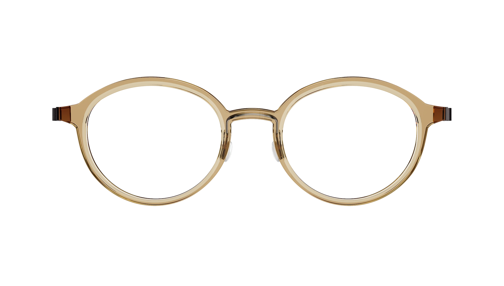
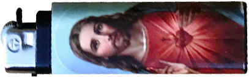

최: 몇 가지 관심사가 만난다. 간단한 시간 기반 작업, 변화 과정과 중간 상태, 매체의 물성과 이에 대한 기대의 간극 등이 이번 전시를 관류하는 주제다.
현: 전시장 벽에는 2016년 제작한 회색 편지지 여덟 점이 걸려 있다. 이 작업에 관해, 슬기와 민은 "편지 봉투 등에 쓰이는 보안 패턴 일부를 발췌, 축소, 재조합해 언뜻 보면 단순한 회색
노이즈 필드 같은 편지지를 만든다."라고 썼다. 왜 '보안 패턴'의 일부였나?
최: 편지 내용을 다른 사람이 훔쳐보지 못하도록 안쪽에 어지러운 무늬가 인쇄된 편지 봉투가 있다. 우리는 이런 무늬를 편지 자체의 '내용'으로 가져왔다. 형식과 내용, 수단과 목적을 뒤집는
농담이었다.
최: 시작은 그랬지만, 실제 작업은 농담을 넘어 제법 고된 수공예가 됐다. 패턴은 단위 요소를 반복해 만들어지는데, 우리는 그런 반복의 흔적을 지우고 싶었기 때문이다. 멀리서 보면 회색 면이고,
조금 더 가까이에서 보면 규칙이 있는 패턴처럼 보인다. 하지만 더 자세히 보면 마치 위장 패턴처럼 규칙을 파악하기 어려운, 거의 무질서한 질감이 드러난다.
현: 2006년 첫 개인전은 <슬기와 민-팩토리 060421-060513>(갤러리 팩토리)이었다. 2008년에는 <슬기와 민-김진혜 080402-080414> (김진혜 갤러리)를 열었다.
2017년 <슬기와 민-페리지060421-170513>(페리지 갤러리)와 관련해, "제목은 2006년 우리가 첫 단독전을 열며 고안한 형식을 따른다."라고 썼다. 이번 전시 제목은
어떻게 결정했나?

새로 맞춘 안경을 쓰면 나의 이미지가 바뀌는 느낌이 들어 항상 신기하고 설렌다. 그러나 모든 물건에서 느끼는 감정이 그렇듯 얼마 가지 않아 안경 또한 다시 귀찮은 존재가 되어버린다. 틈만 나면
닦아줘야 하고 자고 일어나면 사라져있고, 너무 약해서 잘못 건드리면 시야에 방해되는 커다란 흠집이 나기도 한다. 지금은 그저 시야를 선명하게 확보하기 위한 도구에 불과하지만, 안경이 쓰고 싶어
안달이 나던 때가 있었다. 안경 쓴 친구들이 8살의 나의 눈엔 너무나 멋있어 보였고, 안경을 갖기 위한 구실을 만들기 위해 시력을 떨어뜨릴 방법을 찾기 시작했다. 삼촌 잘 때 안경 훔쳐서 계속
쓰고 있기, TV 화면 앞에 앉아 계속 바라보기(눈이 시려워도 절대 감으면 안된다는 나름의 규칙이 있었다.), 책 읽기(사실 책을 아주 가까이서 바라보는 게 맞을지도 모르겠다..)등 다양한
방법을 시도했다. ‘지금쯤 시력이 많이 떨어져 있겠지!’ 라는 생각이 들 때쯤 시력 검사를 하러 안과에 갔고, 안경을 써야할 것 같다는 의사 선생님의 진찰을 받을 수 있었다.

2015년, 누나와 함께 일본 오사카 여행을 갔다. 첫 해외 여행이었으며 누나와 단 둘이 가는 여행도 처음이었다. 오사카는 북적거렸으며 이국적인 느낌을 물씬 뽐냈다. 우리는 둘째날 저녁 한 잡화점에 들렀고, 매우 넓은 매장에 희한한 물건들의 향현이었다. 특이한 가면, 성인용품, 다양한 동물 모양의 귀걸이 등 아마 몇 시간을 그 곳에서 보냈던 것 같다. 희한한 물건들 천지였지만 막상 구매를 한 것은 얼마 없었다. 그 곳을 나가기 전 코끼리 귀걸이와 라이터 하나를 구입하려 했다. 가격은 기억나지 않지만 물건에 적힌 가격을 직원에게 주니 직원은 나에게 일본어를 하며 무언가를 요구했다. 나는 ‘라이터를 구매하니 신분증을 요구하는 건가?‘ 싶어 여권을 내밀었다. 직원은 이상하다는 표정을 지으며 또 일본어를 내뱉기 시작했다. 자세히 들어보니 “탁스, 탁스”라는 말을 반복하고 있었고, 누나와 나는 일본어를 전혀 할 줄 몰라 한참을 의논을 하다 결국 물건을 사지 못하고 그 곳에서 나오게 되었다. 숙소로 돌아가면서도 직원이 외치던 말이 무언인지에 대한 대화를 했고, 결국 ‘탁스’의 정체를 알 수 없었다. 그 날 잠들기 전 네이버 지식인에 탁스의 정체를 물었고, 다음 날 등록된 답변을 듣고 이마를 탁 치게 되었다. 우리가 봤던 가격표는 세전 가격이었으며, 직원이 요구한 것은 당시 일본의 8% 세금(TAX, 일본어 발음 : 탁스)이었던 것이다(2019년 일본은 소비세를 10%로 인상했다). 세전 가격에 익숙치 않았던 한국인 두 명과 세금을 내지 않는 외국인이 황당했던 일본인 직원의 해프닝이었던 것이다. 궁금증이 풀린 우리 남매는 다음 날 저녁 다시 그 잡화점에 들러 코끼리 귀걸이와 이 예수 라이터를 사게 되었다.